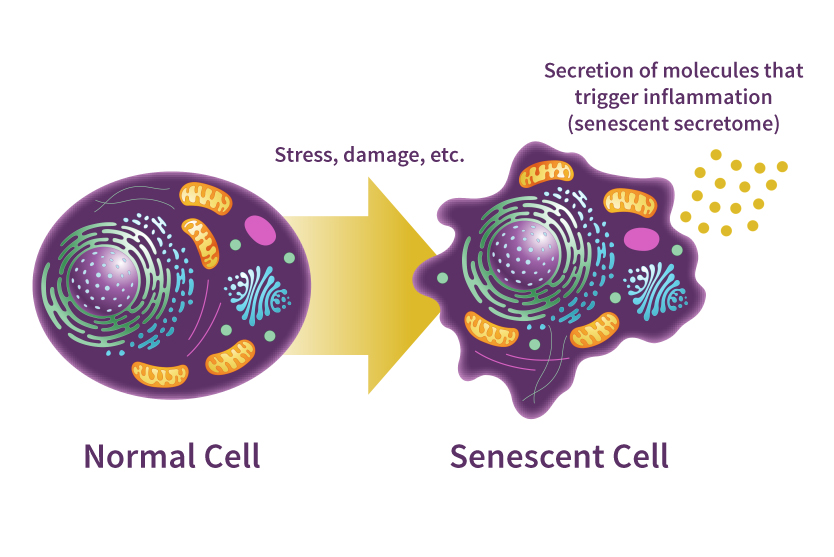

Cellular senescence is a phase in the life of most cells that occurs once a cell divides too many times. Senescent cells aid in growth, healing, and cancer prevention, but they also play a very large role in aging and aging related diseases. Longevity scientists are especially interested in senescence for this reason.
